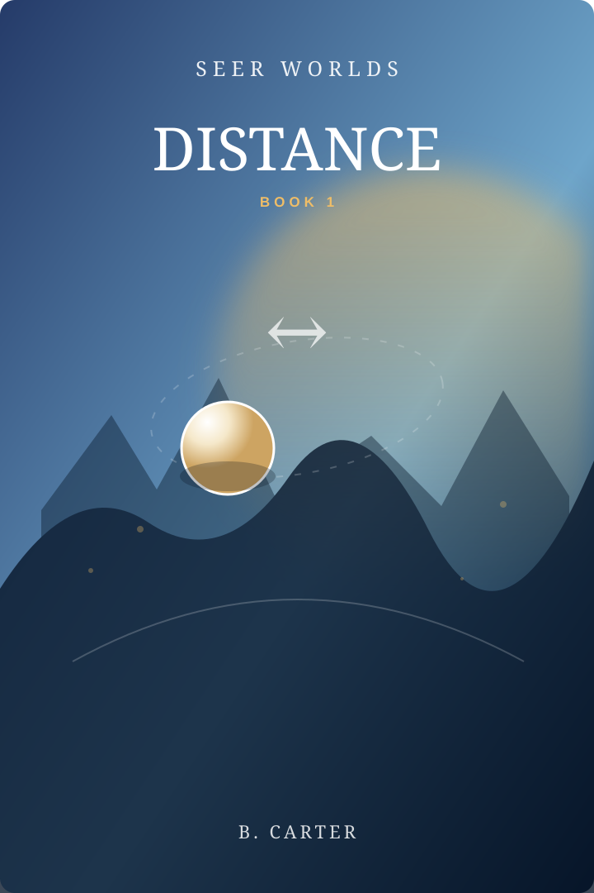
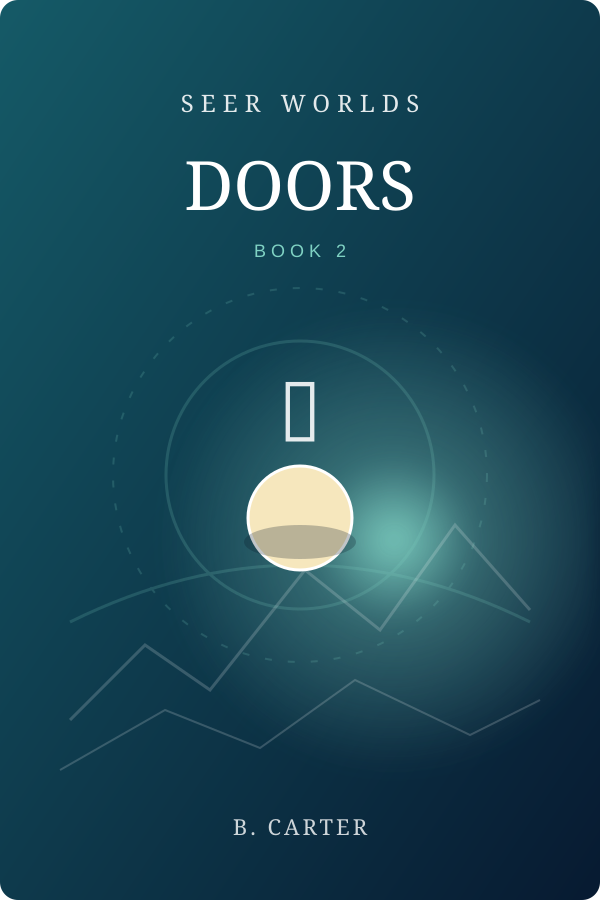
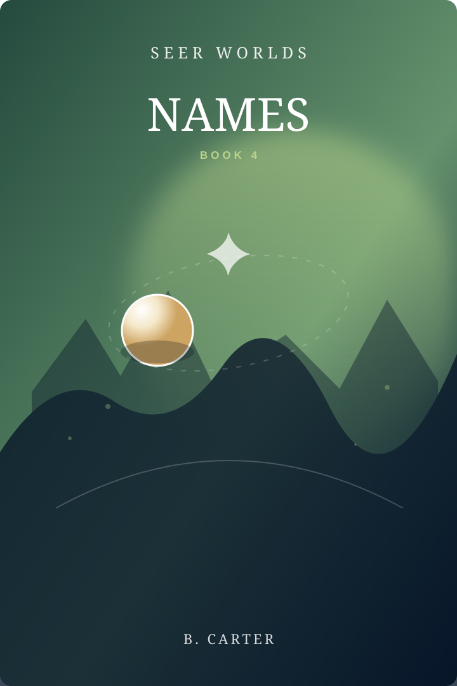
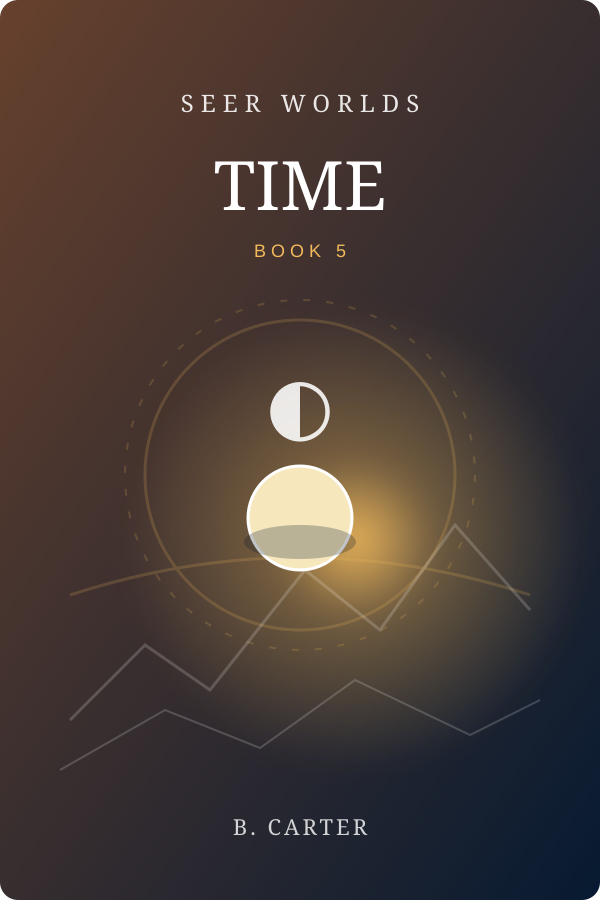
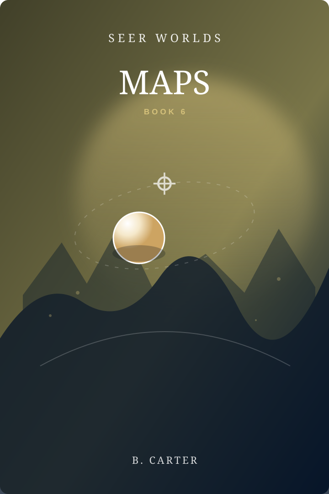
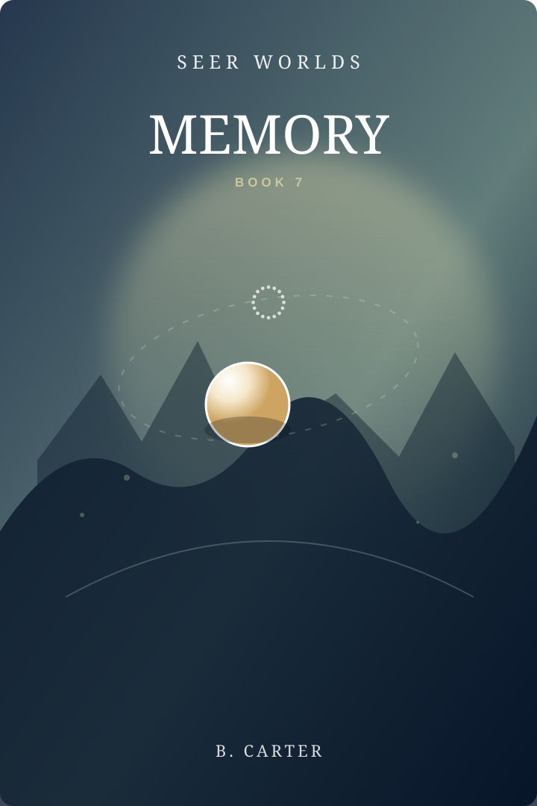
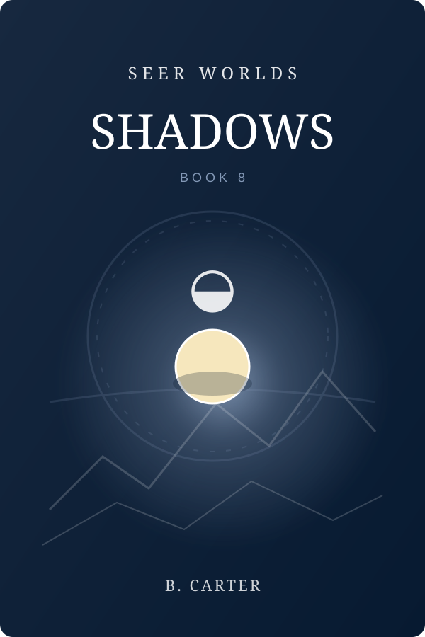
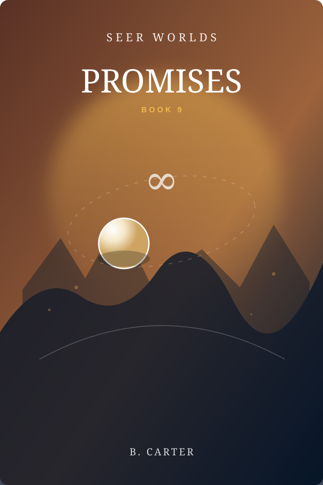

The Seer Worlds library
The Books
Short fantasy adventures built around one impossible world, one memorable rule, and one larger mystery.

Book 01 · Avara
DISTANCE
Distance can be owned.
On a vertical world of cliff shelves and measured routes, Mara’s family depends on a distance somebody else can claim. The Dot sees the same space everyone else sees—and does not understand why permission should change it.

Book 02 · Sull
DOORS
A home remembers everyone welcomed into it.
On a warm underwater world, growing up means settling into a permanent home. Rell has lived with one impossible question for years, and the Dot is the first visitor stubborn enough to keep asking.

Book 03 · Ashet
LIES
A deliberate lie can change what it describes.
The Kesh can see speech, measure it, and sometimes watch a lie alter reality. Ilva once told a huge lie for a good reason. Everyone saw it. Nothing changed.

Book 04 · Orrun
NAMES
A name is what you become.
At fourteen, everyone chooses a name—and their body becomes it. The system works. Everyone knows how it works. The Dot spends a surprising amount of time refusing to accept that this might be the entire problem.

Book 05 · Vell
TIME
One valley lives at two different speeds.
A river crosses a line and suddenly runs five times faster. The people on both sides understand the arithmetic perfectly. The difficulty is that a promise can be true on both sides and still become impossible to live with.

Book 06 · The Reach
MAPS
A map shows the routes available to its reader.
The Reach is an open lattice of stone ribs through clear sky. A courier’s map shows a road nobody can find, and proving the map is right turns out to be very different from making anything better.

Book 07 · Arrit
MEMORY
Memories can be moved. Not copied.
In a crescent-harbor town, a woman gave away her best memory so it would survive. The memory still exists. She does not have it. The Dot assumes the obvious job is to return it.

Book 08 · Seth
SHADOWS
Shadows have lives of their own.
In a bright white-stone town, shadows reveal things their owners are not saying. Everyone knows. Everyone politely looks away. Then the Dot arrives and, being the Dot, looks directly at everything.

Book 09 · The Landings
PROMISES
A promise becomes something you carry.
At a busy river freight town, a boatmaster must choose among three bad ways to deal with a promise that no longer helps the person it was made for. The rule is not confused. Neither is anybody else.